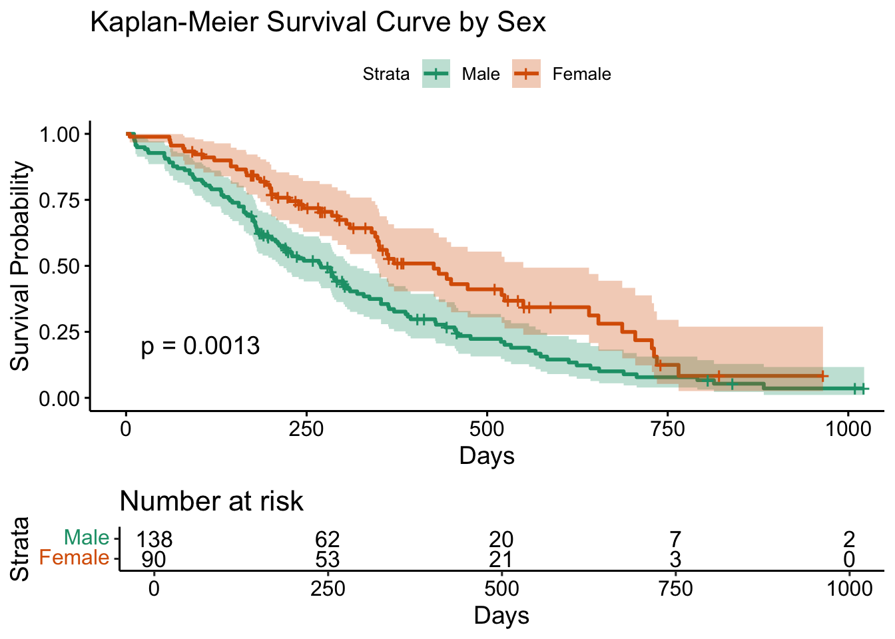

This project explore how patient characteristics— age, sex, and performance status (ph.ecog)—influence survival time in lung cancer patients. ph.ecog is a strong, statistically significant predictor:Patients with worse physical condition had a 63%–70% higher risk of death per unit increase. Sex and age were not significant predictors in the interaction model, though sex alone was significant.
# install.packages("survminer")
library(survival)
library(survminer) ## Loading required package: ggplot2## Loading required package: ggpubr##
## Attaching package: 'survminer'## The following object is masked from 'package:survival':
##
## myelomahead(lung)## inst time status age sex ph.ecog ph.karno pat.karno meal.cal wt.loss
## 1 3 306 2 74 1 1 90 100 1175 NA
## 2 3 455 2 68 1 0 90 90 1225 15
## 3 3 1010 1 56 1 0 90 90 NA 15
## 4 5 210 2 57 1 1 90 60 1150 11
## 5 1 883 2 60 1 0 100 90 NA 0
## 6 12 1022 1 74 1 1 50 80 513 0str(lung)## 'data.frame': 228 obs. of 10 variables:
## $ inst : num 3 3 3 5 1 12 7 11 1 7 ...
## $ time : num 306 455 1010 210 883 ...
## $ status : num 2 2 1 2 2 1 2 2 2 2 ...
## $ age : num 74 68 56 57 60 74 68 71 53 61 ...
## $ sex : num 1 1 1 1 1 1 2 2 1 1 ...
## $ ph.ecog : num 1 0 0 1 0 1 2 2 1 2 ...
## $ ph.karno : num 90 90 90 90 100 50 70 60 70 70 ...
## $ pat.karno: num 100 90 90 60 90 80 60 80 80 70 ...
## $ meal.cal : num 1175 1225 NA 1150 NA ...
## $ wt.loss : num NA 15 15 11 0 0 10 1 16 34 ...#Create a survival object
lung$surv_obj <- with(lung, Surv(time, status == 2))
# by sex
fit_sex <- survfit(surv_obj ~ sex, data = lung)
# install.packages("xfun")
ggsurvplot(
fit_sex,
data = lung,
pval = TRUE,
conf.int = TRUE,
risk.table = TRUE,
legend.labs = c("Male", "Female"),
xlab = "Days",
ylab = "Survival Probability",
title = "Kaplan-Meier Survival Curve by Sex",
palette = "Dark2"
)
# Females consistently show higher survival probabilities than males (green line) across the entire follow-up period.
# Visually, the median survival time is: Females: Around ~450 days; Males: Around ~300 days
# 50% of female patients survived longer than ~450 days, whereas for males, 50% died before ~300 days.cox_model <- coxph(surv_obj ~ age + sex + ph.ecog, data = lung)
summary(cox_model)## Call:
## coxph(formula = surv_obj ~ age + sex + ph.ecog, data = lung)
##
## n= 227, number of events= 164
## (1 observation deleted due to missingness)
##
## coef exp(coef) se(coef) z Pr(>|z|)
## age 0.011067 1.011128 0.009267 1.194 0.232416
## sex -0.552612 0.575445 0.167739 -3.294 0.000986 ***
## ph.ecog 0.463728 1.589991 0.113577 4.083 4.45e-05 ***
## ---
## Signif. codes: 0 '***' 0.001 '**' 0.01 '*' 0.05 '.' 0.1 ' ' 1
##
## exp(coef) exp(-coef) lower .95 upper .95
## age 1.0111 0.9890 0.9929 1.0297
## sex 0.5754 1.7378 0.4142 0.7994
## ph.ecog 1.5900 0.6289 1.2727 1.9864
##
## Concordance= 0.637 (se = 0.025 )
## Likelihood ratio test= 30.5 on 3 df, p=1e-06
## Wald test = 29.93 on 3 df, p=1e-06
## Score (logrank) test = 30.5 on 3 df, p=1e-06# Being female is associated with a 42.5% lower hazard of death compared to males.
# Age does not reach significance at p < .05
cox_interaction <- coxph(surv_obj ~ age * sex + ph.ecog, data = lung)
summary(cox_interaction)## Call:
## coxph(formula = surv_obj ~ age * sex + ph.ecog, data = lung)
##
## n= 227, number of events= 164
## (1 observation deleted due to missingness)
##
## coef exp(coef) se(coef) z Pr(>|z|)
## age 0.04432 1.04532 0.02763 1.604 0.109
## sex 1.00726 2.73809 1.21711 0.828 0.408
## ph.ecog 0.49197 1.63554 0.11599 4.241 2.22e-05 ***
## age:sex -0.02478 0.97552 0.01923 -1.289 0.198
## ---
## Signif. codes: 0 '***' 0.001 '**' 0.01 '*' 0.05 '.' 0.1 ' ' 1
##
## exp(coef) exp(-coef) lower .95 upper .95
## age 1.0453 0.9566 0.9902 1.103
## sex 2.7381 0.3652 0.2520 29.748
## ph.ecog 1.6355 0.6114 1.3030 2.053
## age:sex 0.9755 1.0251 0.9394 1.013
##
## Concordance= 0.651 (se = 0.025 )
## Likelihood ratio test= 32.14 on 4 df, p=2e-06
## Wald test = 32.65 on 4 df, p=1e-06
## Score (logrank) test = 33.33 on 4 df, p=1e-06# Each 1-point increase in ECOG score (worse) increases hazard of death by 63.6%.
# the effect of age on survival does not meaningfully differ by sex.